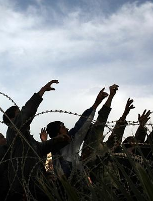

Libyan Civil War
The Libyan civil war also referred to as the Libyan Revolution, was an armed conflict in the North African state of Libya, fought between forces loyal to Colonel Muammar Gaddafi and those seeking to oust his government. The war was preceded by protests in Benghazi beginning on Tuesday, 15 February 2011, which led to clashes with security forces that fired on the crowd. The protests escalated into a rebellion that spread across the country, with the forces opposing Gaddafi establishing an interim governing body, the National Transitional Council.
- Event: Libyan Cicil War
- Location: Libya
- Date and Time: Feb 15 2011
- Impact: Over 13,000 deaths, 50,000 refugees. In need of Medicine, Fuel, Food
Related Oganizations:
Related People:
External Links: